O sistema tegumentar consiste em: pele, cabelo, unhas, tecido subcutâneo abaixo da pele e glândulas sortidas.
A função mais óbvia do sistema tegumentar é a proteção que a pele dá aos tecidos subjacentes.
A pele não só retém a maioria das substâncias nocivas, mas também evita a perda de fluidos.
Uma das principais funções do tecido subcutâneo é conectar a pele aos tecidos subjacentes, como os músculos.
O cabelo no couro cabeludo fornece isolamento do frio para a cabeça.
O pelo dos cílios e sobrancelhas ajuda a manter a poeira e a transpiração longe dos olhos, e os pelos nas narinas ajudam a manter a poeira fora das cavidades nasais.
As unhas protegem as pontas dos dedos das mãos e dos pés contra ferimentos mecânicos e dão aos dedos maior capacidade de pegar pequenos objetos.
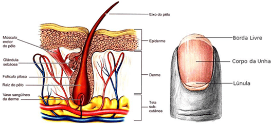
Existem quatro tipos de glândulas no sistema tegumentar:
Glândulas sudoríferas (sudoríparas): são produtoras de suor, são importantes para ajudar a manter a temperatura corporal.
Glândulas sebáceas: são produtoras de óleo que ajudam a inibir as bactérias, nos mantêm à prova d’água e evitam que nossos cabelos e pele sequem.
Glândulas ceruminosas: produzem cera de ouvido que mantém a superfície externa do tímpano flexível e evita a secagem.
E glândulas mamárias: produzem o leite materno.
Essas são todas glândulas exócrinas, secretando materiais fora das células e do corpo.
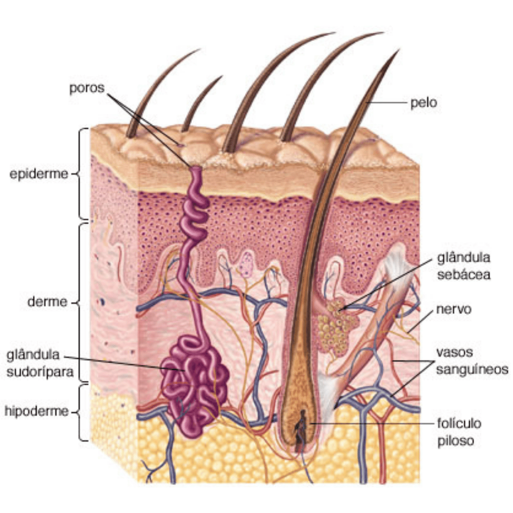
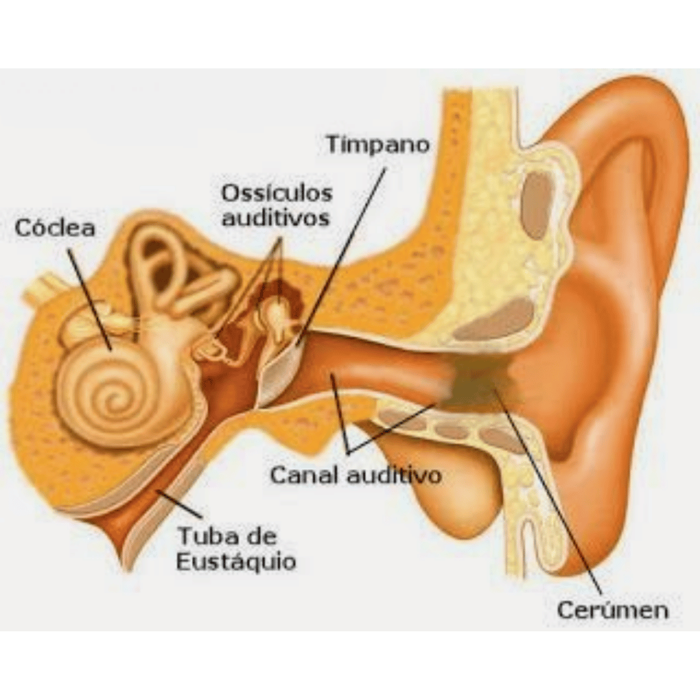
A pele é um órgão do sistema tegumentar constituído por uma camada de tecidos que protegem os músculos e órgãos subjacentes.
É considerada uma das partes mais importantes do corpo.
Como interface com o ambiente, desempenha o papel mais importante na proteção contra patógenos.
Suas outras funções principais são:
Isolamento e regulação de temperatura, sensação e síntese de vitamina D e B.
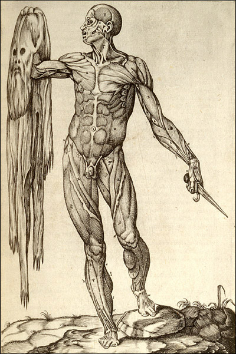
A pele tem pigmentação conhecida como melanina, que é fornecida pelos melanócitos.
A melanina absorve parte da radiação potencialmente perigosa da luz solar.
Ele também contém enzimas de reparo de DNA que reverteram os danos causados pelos raios UV, e as pessoas que não possuem os genes para essas enzimas sofrem altas taxas de câncer de pele.
Uma forma predominantemente produzida pela luz ultravioleta, o melanoma maligno, é particularmente invasiva, fazendo com que ela se espalhe rapidamente e muitas vezes pode ser fatal.
A pigmentação da pele humana varia entre as populações de maneira notável.
Isso às vezes levou à classificação de pessoas com base na cor da pele.
A pele danificada tentará curar formando tecido cicatricial, muitas vezes causando descoloração e despigmentação da pele.
A pele é muitas vezes conhecida como “o maior órgão do corpo humano“.
Isso se aplica à superfície externa, pois cobre o corpo, parecendo ter a maior área de superfície de todos os órgãos.
Além disso, aplica-se ao peso, já que pesa mais do que qualquer órgão interno, representando cerca de 15% do peso corporal.
Para o ser humano adulto médio, a pele tem uma área superficial entre 1,5-2,0 metros quadrados, a maior parte tem entre 2 a 3 mm de espessura.
A polegada quadrada média da pele contém 650 glândulas sudoríparas, 20 vasos sanguíneos, 60.000 melanócitos e mais de mil terminações nervosas.
O uso de cosméticos naturais ou sintéticos para tratar a aparência da face e do estado da pele (como o controle dos poros e a limpeza da cabeça negra) é comum entre muitas culturas.
A pele tem duas camadas principais que são feitas de tecidos diferentes e têm funções muito diferentes.
A pele é composta pela epiderme e pela derme.
Abaixo dessas camadas está a hipoderme ou camada adiposa subcutânea, que geralmente não é classificada como uma camada de pele.
A camada mais externa é chamada de epiderme e ocupa um quinto da seção transversal.
Vários cabelos emergem da superfície.
A epiderme mergulha em torno de um dos cabelos, formando um folículo.
A camada média é chamada de derme, que ocupa quatro quintos da seção transversal.
A derme contém um músculo eretor do pilar ligado a um dos folículos.
A derme também contém uma glândula sudorípara écrina, composta por um grupo de túbulos.
Um túbulo sobe do ramo, através da epiderme, abrindo para a superfície um poro.
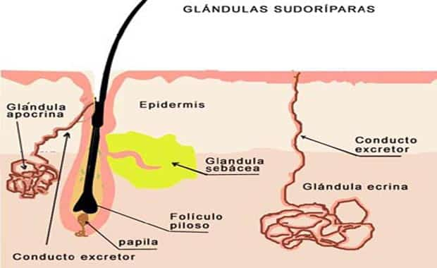
Existem dois nervos semelhantes a cordas que viajam verticalmente pela derme.
O nervo direito está ligado a um corpúsculo de Pacini, que é uma estrutura amarela constituída por ovais concêntricos semelhantes a uma cebola.
O nível mais baixo da pele, a hipoderme, contém tecido gorduroso, artérias e veias.
Os vasos sanguíneos viajam da hipoderme e conectam-se aos folículos pilosos e ao músculo eretor do pelo na derme.
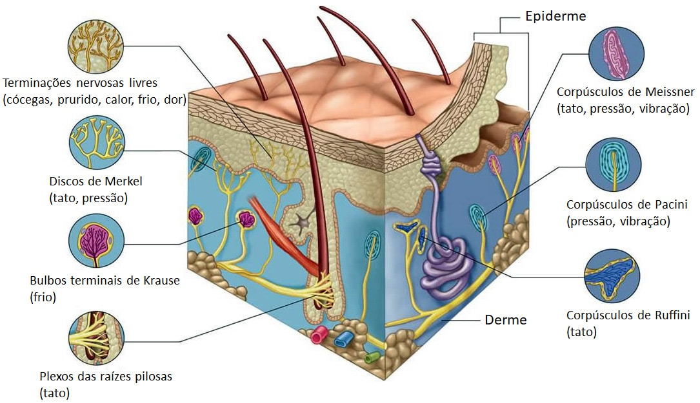
A epiderme mais externa consiste em epitélio queratinizado escamoso estratificado com uma membrana basal subjacente.
Não contém vasos sanguíneos e é nutrido pela difusão da derme.
Os principais tipos de células que compõem a epiderme são os queratinócitos, com melanócitos e células de Langerhans também presentes.
A epiderme pode ser ainda subdividida nos seguintes estratos / camadas, começando pela mais externa:
Córnea, lúcida, granulosa, espinhosa e basal.
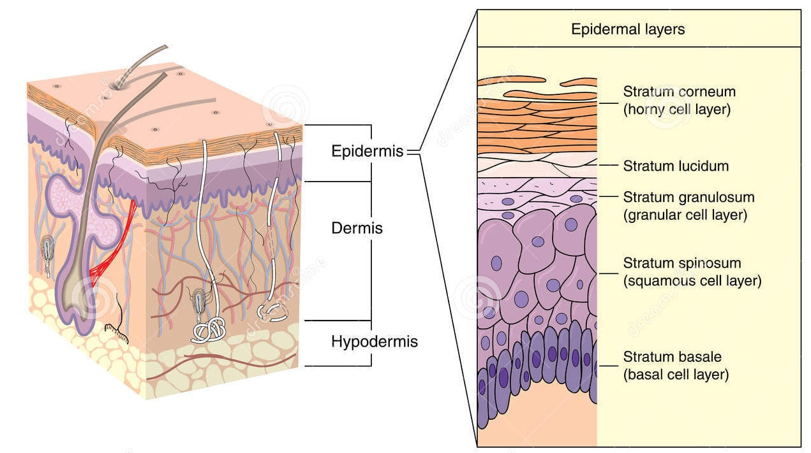
As células são formadas por mitose nas camadas mais internas.
Eles se movem para cima, mudando a forma e a composição conforme se diferenciam, induzindo a expressão de novos tipos de genes de queratina.
Eles eventualmente alcançam a camada córnea e são descartados (descamação), esse processo é chamado de queratinização e ocorre em cerca de 30 dias.
Esta camada de pele é responsável por manter a água no corpo e manter outros produtos químicos nocivos e patógenos para fora.
Os capilares sanguíneos são encontrados sob a derme e estão ligados a uma arteríola e a uma vênula.
Vasos de derivação arterial podem contornar a rede nos ouvidos, nariz e pontas dos dedos.
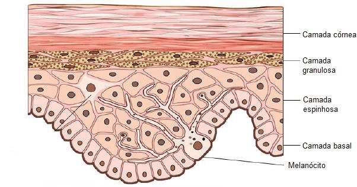
A derme encontra-se abaixo da epiderme e contém várias estruturas, incluindo vasos sanguíneos, nervos, folículos pilosos, músculo liso, glândulas e tecido linfático.
Consiste em tecido conjuntivo frouxo, também chamado de tecido conjuntivo areolar.
Colágeno, elastina e fibras reticulares estão presentes.
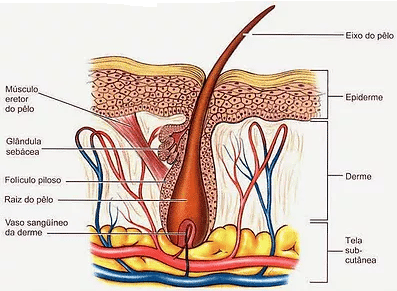
Os músculos eretores, presos entre a papila e a epiderme do pelo, podem contrair-se, resultando na elevação da fibra capilar e consequentemente arrepios.
Os principais tipos de células são fibroblastos, adipócitos (armazenamento de gordura) e macrófagos.
As glândulas sebáceas são glândulas exócrinas que produzem uma mistura de lipídios e substâncias cerosas: lubrificação, impermeabilização, amolecimento e ação antibactericida estão entre as muitas funções do sebo.
Essas glândulas se abrem através de um ducto na pele por um poro.
A derme é feita de um tipo irregular de tecido conjuntivo fibroso composto de fibras de colágeno e elastina.
Pode ser dividida nas camadas papilar e reticular.
A camada papilar é mais externa e se estende até a epiderme para supri-la de vasos.
É composto de fibras dispostas de maneira frouxa.
As cristas papilares formam as linhas das mãos que nos dão impressões digitais.
A camada reticular é mais densa e contínua com a hipoderme.
Ele contém a maior parte das estruturas (como as glândulas sudoríparas).
A camada reticular é composta de fibras dispostas irregularmente e resiste ao alongamento.
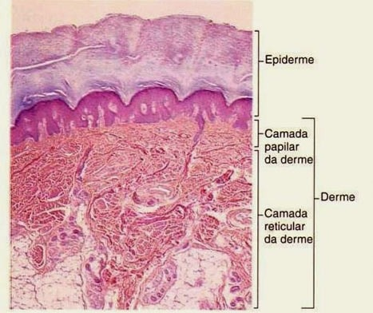
A hipoderme não faz parte da pele e fica abaixo da derme.
Sua finalidade é unir a pele ao osso subjacente e ao músculo, bem como suprir-lhe vasos sanguíneos e nervos.
Consiste em tecido conjuntivo frouxo e elastina.
Os principais tipos de células são fibroblastos, macrófagos e adipócitos (a hipoderme contém 95% da gordura corporal).
Nesta camada se encontra o panículo adiposo, uma camada de gordura disposta sob a pele, que absorve impactos e atua como isolante térmico.
Nos recém-nascidos, este tipo de tecido adiposo é de espessura uniforme; nos adultos, a distribuição é regulada por hormônios, e o acúmulo se dá em determinadas posições.
Gordura serve como preenchimento e isolamento para o corpo.
Proteção: A pele dá uma barreira anatômica entre o ambiente interno e externo na defesa corporal; as células de Langerhans na pele fazem parte do sistema imunológico.
Sensibilidade: A pele contém uma variedade de terminações nervosas que reagem ao calor, frio, toque, pressão, vibração e lesão tecidual.
Regulação do calor: A pele contém um suprimento de sangue muito maior que suas necessidades, o que permite um controle preciso da perda de energia por radiação, convecção e condução.
Vasos sanguíneos dilatados aumentam a perfusão e a perda de calor, enquanto os vasos constritos reduzem significativamente o fluxo sanguíneo cutâneo e conservam o calor.
Músculos eretores do pele são significativos em animais.
Os humanos têm três tipos diferentes de cabelos:
Lanugo: o cabelo fino e despigmentado que cobre quase todo o corpo de um feto, embora a maioria tenha sido substituída por velino na época do nascimento do bebê.
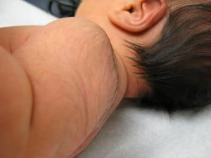
Veloso: o pelo do corpo curto e sedoso, também despigmentado, que cresce na maioria dos lugares do corpo humano.
Embora ocorra em ambos os sexos e componha grande parte do cabelo em crianças, os homens têm uma porcentagem muito menor (em torno de 10%) de velos, enquanto 2/3 dos cabelos de uma mulher são velos.
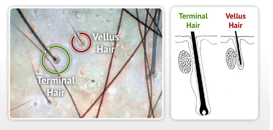
Terminal: o cabelo totalmente desenvolvido, geralmente mais longo, mais grosso, mais espesso e mais escuro do que o cabelo veloso, e geralmente é encontrado em regiões como axilar, barba masculina e região púbica.
A unha é uma estrutura importante feita de queratina.
A unha geralmente serve a dois propósitos:
Ela serve como uma placa protetora e aumenta a sensação da ponta do dedo.
O eponíquio (mais comumente conhecido como cutícula) é uma fina camada rosa entre a borda proximal branca da unha (a lúnula) e a borda da pele do dedo.
A lúnula aparece como uma área branca em forma de crescente na borda proximal da unha rosa-sombreada.
As dobras da unha são onde os lados da unha entram em contato com a pele do dedo.
O corpo da unha é chamado de placa ungueal, tem função sensorial importante.
A ponta do dedo tem muitas terminações nervosas permitindo-nos receber volumes de informação sobre objetos que tocamos.
A unha age como uma força contrária à ponta do dedo, proporcionando ainda mais estímulos sensoriais quando um objeto é tocado.
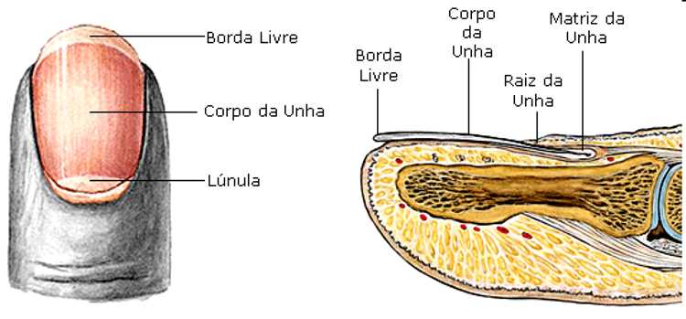
A estrutura que conhecemos como a unha é dividida em seis partes específicas:
Raiz, leito ungueal, placa ungueal, eponíquio (cutícula), perioníquio e hiponíquio.
Raiz: é conhecida como matriz germinativa.
Esta parte da unha está realmente abaixo da pele atrás da unha e se estende vários milímetros no dedo.
A raiz da unha produz a maior parte do volume da unha e do leito ungueal.
Esta porção da unha não possui melanócitos ou células produtoras de melanina.
A borda da matriz germinativa é vista como uma estrutura branca em forma de lua crescente chamada lúnula.
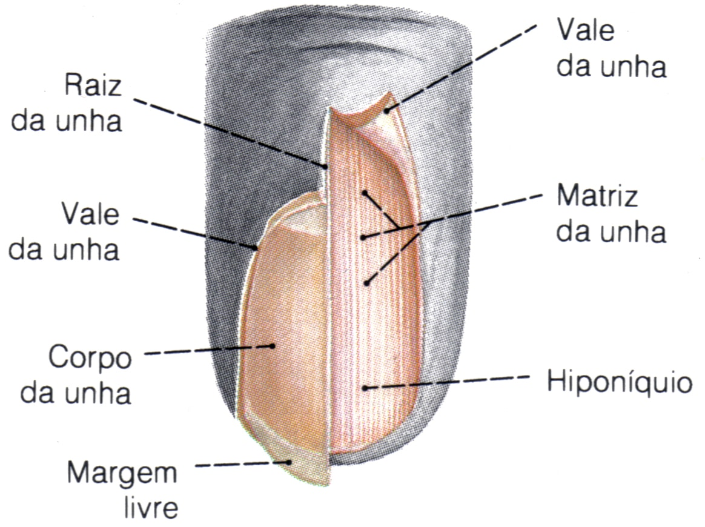
Leito ungueal: a “cama de unha” é parte da matriz da unha chamada matriz estéril.
Ela se estende da borda da matriz germinativa, ou lúnula, ao hiponíquio.
O leito ungueal contém os vasos sanguíneos, nervos e melanócitos, ou células produtoras de melanina.
Como a unha é produzida pela raiz, ela flui ao longo do leito ungueal, o que adiciona material à superfície inferior da unha, tornando-a mais espessa.
É importante para o crescimento normal das unhas que o leito ungueal seja suave.
Se não for, a unha pode dividir ou desenvolver sulcos que podem ser cosmeticamente desagradáveis.
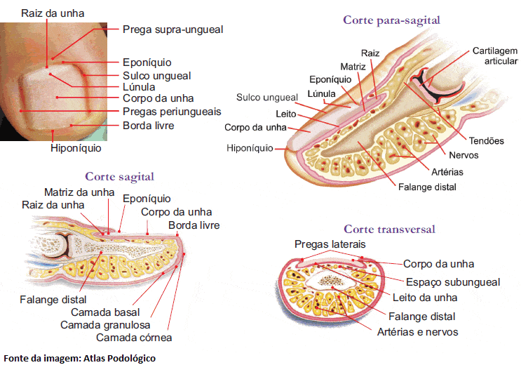
Placa ungueal: também chamada de corpo / lâmina ou prato ungueal é a unha real, feita de queratina translúcida.
A aparência rosa da unha vem dos vasos sanguíneos debaixo da unha.
A superfície inferior da placa ungueal tem sulcos ao longo do comprimento da unha que ajudam a ancorá-la no leito ungueal.
Eponíquio: a cutícula da unha.
A cutícula está situada entre a pele do dedo e a placa ungueal fundindo essas estruturas e proporcionando uma barreira impermeável.
Perioníquio: também conhecida como borda ou prega periungueal.
É a pele que cobre a placa ungueal em seus lados.
Também é conhecido como a borda paroniquial.
O perioníquio é o local das unhas, unhas encravadas e uma infecção da pele chamada paroníquia.
Hiponíquio: é a área entre a placa ungueal e a ponta do dedo.
É a junção entre a borda livre da unha e a pele da ponta do dedo, proporcionando também uma barreira à prova d’água.
Classificação de acordo com a eliminação.
De acordo com a forma em que a secreção é eliminada, podemos classificar as glândulas exócrinas em:
Merócrina, apócrina e holócrina.
Nos seres humanos, existem dois tipos de glândulas sudoríparas que diferem muito na composição do suor e sua finalidade:
Écrinas ou merócrinas e apócrinas.
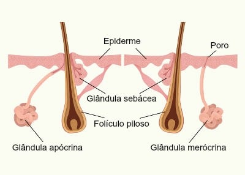
A glândula sudorípara écrina é um feixe de tubos brancos embutidos na derme.
Um único tubo branco sobe do feixe e se abre para a superfície da epiderme.
A abertura é chamada de poro.
Existem vários poros no pequeno bloco de pele retratado neste diagrama.
Glândulas sudoríparas écrinas são glândulas exócrinas distribuídas por toda a superfície do corpo, mas são particularmente abundantes nas palmas das mãos, solas dos pés e na testa.
Estes produzem suor que é composto principalmente de água (99%) com vários sais.
A principal função é a regulação da temperatura corporal.
As glândulas sudoríparas écrinas são derivadas das glândulas tubulares, levando diretamente à camada mais superficial da epiderme, mas se estendendo até a camada interna da pele (derme).
Eles estão distribuídos em quase toda a superfície do corpo em humanos e muitas outras espécies, mas faltam em algumas espécies marinhas e com peles.
As glândulas sudoríparas são controladas por nervos colinérgicos simpáticos que são controlados por um centro no hipotálamo.
O hipotálamo detecta diretamente a temperatura central e também introduz os receptores de temperatura na pele e modifica a produção de suor, juntamente com outros processos termorregulatórios.
O suor écrino humano é composto principalmente de água com vários sais e compostos orgânicos em solução.
Contém pequenas quantidades de materiais gordurosos, uréia e outros resíduos.
O suor de outras espécies geralmente diferem na composição.
As glândulas sudoríparas apócrinas desenvolvem-se apenas durante a puberdade precoce a meados da puberdade (aproximadamente 15 anos) e liberam mais de uma quantidade normal de suor durante aproximadamente um mês e subsequentemente regulam e liberam quantidades normais de suor após um determinado período de tempo.
As glândulas sudoríparas apócrinas produzem suor que contém materiais gordurosos.
Essas glândulas estão presentes principalmente nas axilas e ao redor da área genital e sua atividade é a principal causa do odor do suor, devido às bactérias que quebram os compostos orgânicos no suor dessas glândulas.
Estresse emocional aumenta a produção de suor das glândulas apócrinas, ou mais precisamente: o suor já presente no túbulo é espremido.
Glândulas sudoríparas apócrinas servem essencialmente como glândulas de cheiro.
O folículo é em forma de lágrima.
Sua base ampliada, rotulada como bulbo capilar, está embutida na hipoderme.
A camada mais externa do folículo é a epiderme, que invagina da superfície da pele para envolver o folículo.
Dentro da epiderme é a bainha da raiz externa, que está presente apenas no bulbo capilar.
Não se estende pelo eixo do cabelo.
Dentro da bainha radicular externa está a bainha da raiz interna.
A bainha da raiz interna se estende pela metade até o meio do pelo, terminando no meio da derme.
A matriz do cabelo é a camada mais interna.
A matriz capilar envolve a parte inferior da haste do cabelo, onde está embutida no bulbo capilar.
A haste / eixo do cabelo, por si só, contém três camadas: a cutícula mais externa, uma camada intermediária chamada córtex e uma camada mais interna chamada medula.
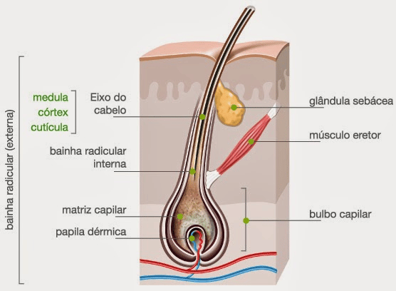
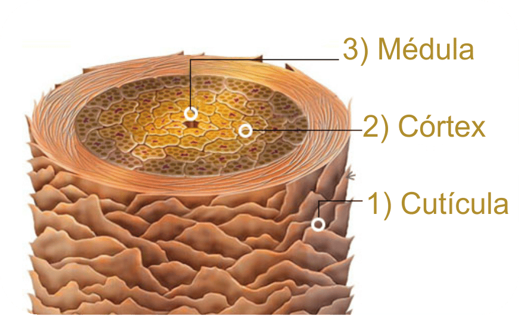
As glândulas sebáceas são glândulas encontradas na pele dos mamíferos.
Elas secretam uma substância oleosa chamada sebo (em latim significa gordura) que é feita de gordura (lipídios) e os restos de células produtoras de gordura mortas.
Essas glândulas existem em humanos por toda a pele, exceto nas palmas das mãos e solas dos pés.
O sebo atua para proteger e impermeabilizar os cabelos e a pele, evitando que fiquem secos, quebradiços e rachados.
Também pode inibir o crescimento de microorganismos na pele.
As glândulas sebáceas geralmente podem ser encontradas em áreas cobertas de pelos onde elas estão conectadas aos folículos capilares para depositar sebo nos pelos e trazê-las para a superfície da pele ao longo da haste capilar.
A estrutura que consiste em cabelo, folículo piloso e glândula sebácea é também conhecida como unidade pilossebácea.
As glândulas sebáceas também são encontradas em áreas sem pelos de lábios, pálpebras, pênis, pequenos lábios e mamilos; aqui o sebo atinge a superfície através de dutos.
Nas glândulas, o sebo é produzido dentro de células especializadas e é liberado à medida que essas células explodem; glândulas sebáceas são assim classificadas como glândulas holócrinas.
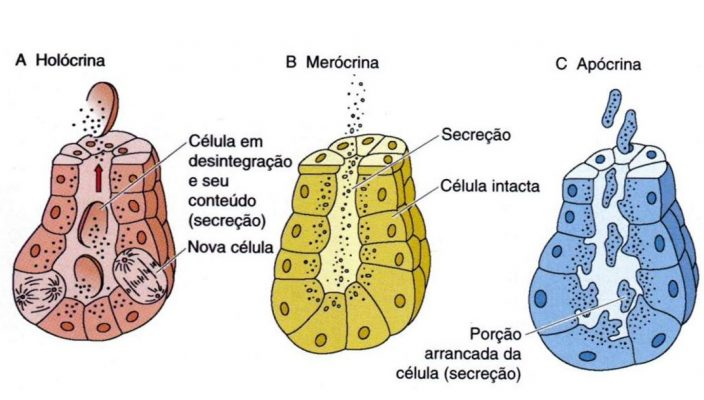
O sebo é inodoro, mas sua degradação bacteriana pode produzir odores.
O sebo é a causa de algumas pessoas experimentarem o cabelo “oleoso” se ele não for lavado por vários dias.
A cera é parcialmente sebo, assim como a secreção mucopurulenta, a substância seca que se acumula nos cantos do olho depois de dormir.
A composição do sebo varia de espécie para espécie; em humanos, o conteúdo lipídico consiste em cerca de 25% de monoésteres de cera, 41% de triglicerídeos, 16% de ácidos graxos livres e 12% de esqualeno.
A atividade das glândulas sebáceas aumenta durante a puberdade devido ao aumento dos níveis de andrógenos.
As glândulas sebáceas estão envolvidas em problemas de pele, como acne e queratose pilar.
Uma glândula sebácea bloqueada pode resultar em um cisto sebáceo.
A prescrição da droga isotretinoína reduz significativamente a quantidade de sebo produzida pelas glândulas sebáceas, e é usada para tratar a acne.
O uso extremo (até 10 vezes os valores prescritos pelo médico) de esteróides anabolizantes por fisiculturistas para prevenir a perda de peso tendem a estimular as glândulas sebáceas que podem causar acne.
As glândulas sebáceas de um feto humano no útero secretam uma substância chamada vernix caseosa, uma substância branca “cerosa” ou “brega” que reveste a pele dos recém-nascidos.
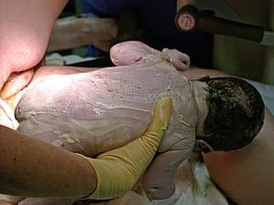
A cera do “ouvido”, também conhecida pelo termo médico cerume ou cerúmen, é uma substância cerosa amarelada secretada no canal auditivo de humanos e muitos outros mamíferos.
Ela desempenha um papel vital no canal auditivo humano, auxiliando na limpeza e lubrificação, e também fornece alguma proteção contra bactérias, fungos e insetos.
O cerume em excesso ou impactado pode pressionar o tímpano e / ou ocluir o canal auditivo externo e prejudicar a audição.
O cerume é produzido no terço externo da porção cartilaginosa do canal auditivo humano.
É uma mistura de secreções viscosas das glândulas sebáceas e menos viscosas das glândulas sudoríparas apócrinas modificadas.
Distinguem-se dois tipos distintos de cera de ouvido geneticamente determinados: O tipo húmido dominante e o tipo seco, recessivo.
Asiáticos e nativos americanos são mais propensos a ter o tipo seco de cerume (cinza e escamosa), enquanto que os caucasianos e africanos são mais propensos a ter o tipo úmido (castanho-mel a marrom-escuro e úmido).
A diferença no tipo de cerume foi monitorada para uma única mudança de base (um polimorfismo de nucleotídeo único) em um gene conhecido como “gene C11 da cassete de ligação ao ATP”.
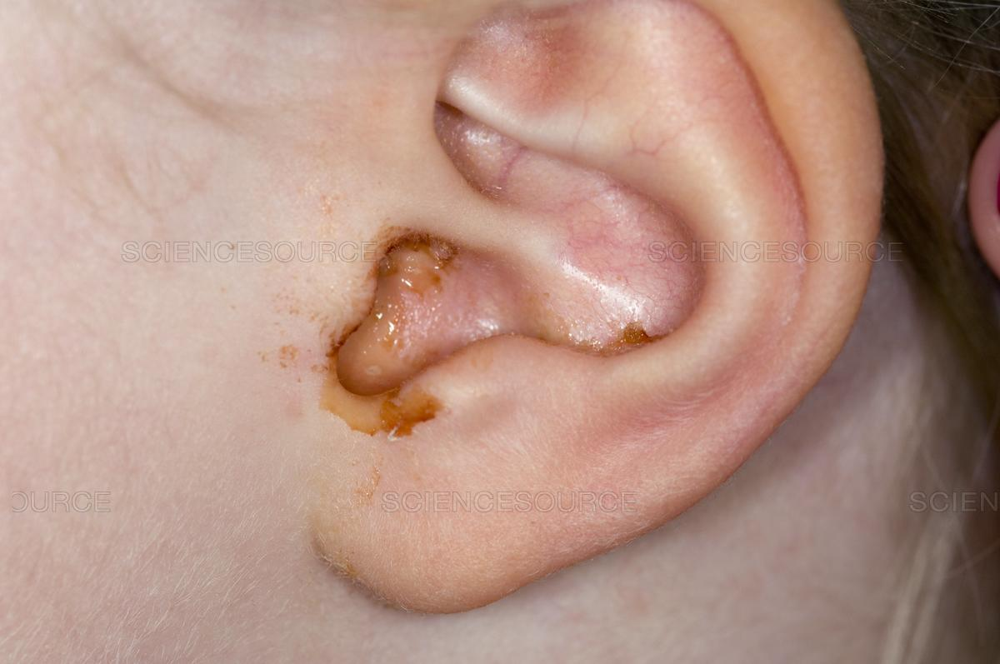
Além de afetar o tipo de cerume, essa mutação também é vermelha produção de suor.
Os pesquisadores supõem que a redução do suor foi benéfica para os ancestrais dos asiáticos orientais e dos nativos americanos, que se acredita terem vivido em climas frios.
Limpeza: A limpeza do canal auditivo ocorre como resultado do processo de “cintagem” da migração epitelial, auxiliado pelo movimento da mandíbula.
As células formadas no centro da membrana timpânica migram para fora (a uma taxa equivalente à do crescimento da unha) para as paredes do canal auditivo e aceleram em direção à entrada do canal auditivo.
O cerume no canal também é levado para fora, levando consigo qualquer sujeira, poeira e partículas que possam ter se acumulado no canal.
O movimento da mandíbula auxilia nesse processo, desalojando detritos presos às paredes do canal auditivo, aumentando a probabilidade de sua extrusão.
Lubrificação: a lubrificação evita a ressecação e a coceira da pele dentro do canal auditivo (conhecida como asteatose).
As propriedades lubrificantes surgem do alto conteúdo lipídico do sebo produzido pelas glândulas sebáceas.
No cerume do tipo úmido, pelo menos, esses lipídios incluem colesterol, esqualeno e muitos ácidos graxos de cadeia longa e álcoois.
Papéis antibacterianos e antifúngicos: Embora estudos conduzidos até a década de 1960 tenham encontrado poucas evidências que apoiassem um papel antibacteriano para o cerume, estudos mais recentes descobriram que o cerume fornece alguma proteção bactericida contra algumas estirpe ou cepas de bactérias.
Verificou-se que o cerume é eficaz na redução da viabilidade de uma vasta gama de bactérias (por vezes até 99%), incluindo Haemophilus influenzae, Staphylococcus aureus e muitas variantes de Escherichia coli.
O crescimento de dois fungos comumente presentes na otomicose também foi significativamente inibido pelo cerume humano.
Estas propriedades antimicrobianas são devidas principalmente à presença de ácidos graxos saturados, lisozima e, especialmente, ao pH relativamente baixo de cerume (tipicamente em torno de 6,1 em indivíduos normais).
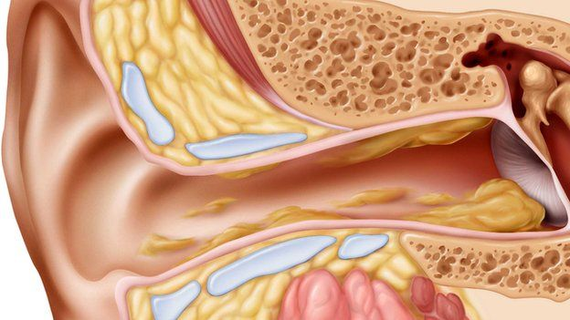
As glândulas mamárias são os órgãos que, no mamífero feminino, produzem leite para o sustento dos filhotes.
Essas glândulas exócrinas são sudoríparas aumentadas e modificadas e são características dos mamíferos que deram o nome à classe.
Os componentes básicos da glândula mamária são:
Os alvéolos (cavidades ocas, alguns milímetros grandes) revestidas com células epiteliais secretoras de leite e cercadas por células mioepiteliais (musculares).
Esses alvéolos se unem para formar grupos conhecidos como lóbulos, e cada lóbulo tem um ducto lactífero que drena em aberturas no mamilo.
As células mioepiteliais podem se contrair, semelhantes às células musculares, e, assim, empurrar o leite dos alvéolos pelos ductos lactíferos em direção ao mamilo, onde se acumulam em amplas (cavidades) dos ductos.
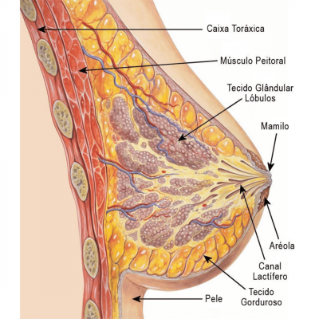
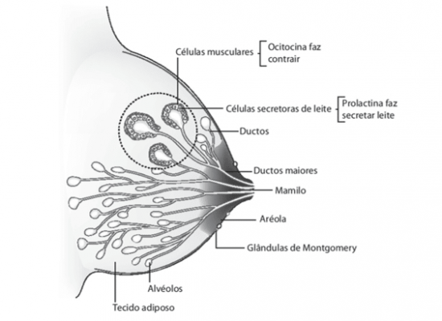
Um bebê mamando essencialmente comprime o leite desses seios.
Distingue-se entre uma glândula mamária simples, que consiste de todo o tecido secretor de leite levando a um único ducto lactífero, e uma glândula mamária complexa, que consiste de todas as glândulas mamárias simples servindo um mamilo.
Os humanos normalmente têm duas glândulas mamárias complexas, uma em cada mama, e cada glândula mamária complexa consiste de 10 a 20 glândulas simples.
A presença de mais de dois mamilos é conhecida como politelia e a presença de mais de duas glândulas mamárias complexas como a polimastia.
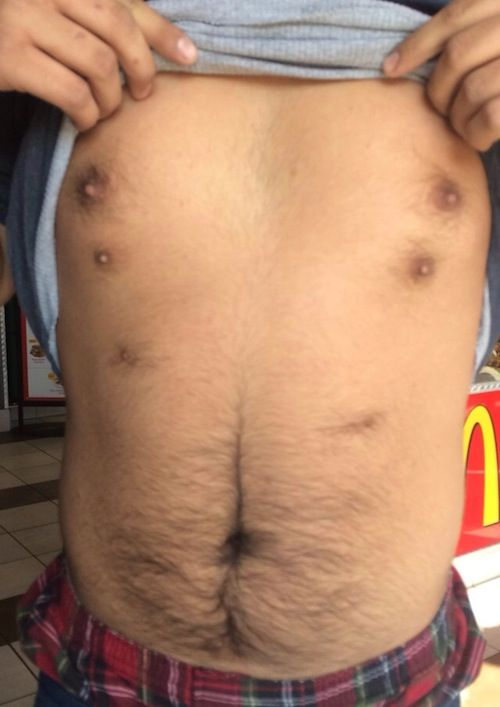
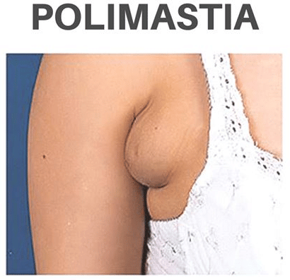
O desenvolvimento das glândulas mamárias é controlado por hormônios.
As glândulas mamárias existem em ambos os sexos, mas são rudimentares até a puberdade quando, em resposta aos hormônios ovarianos, começam a se desenvolver na fêmea.
O estrogênio promove a formação, enquanto a testosterona o inibe.
No momento do nascimento, o bebê tem ductos lactíferos, mas não tem alvéolos.
Pouca ramificação ocorre antes da puberdade quando os estrogênios ovarianos estimulam a diferenciação ramificada dos ductos em massas esféricas de células que se tornarão alvéolos.
Os verdadeiros alvéolos secretórios só se desenvolvem na gravidez, onde os níveis crescentes de estrogênio e progesterona causam maior ramificação e diferenciação das células do ducto, juntamente com um aumento no tecido adiposo e um fluxo sanguíneo mais rico.
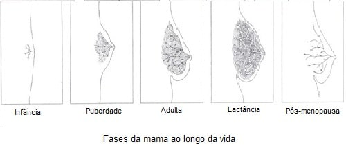
O colostro é secretado no final da gravidez e nos primeiros dias após o parto.
A verdadeira secreção de leite (lactação) começa alguns dias depois devido a uma redução na progesterona circulante e à presença do hormônio prolactina.
A sucção do bebê causa a liberação do hormônio oxitocina, que estimula a contração das células mioepiteliais.
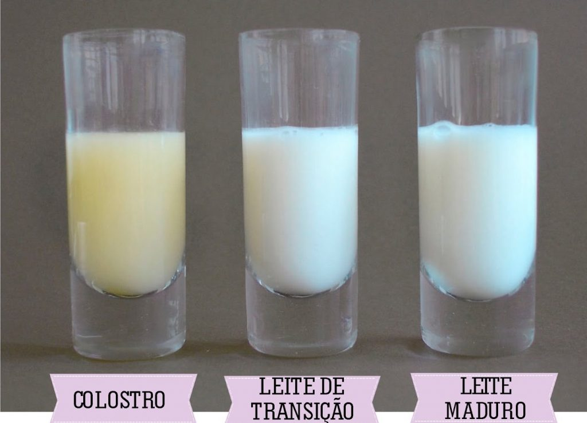